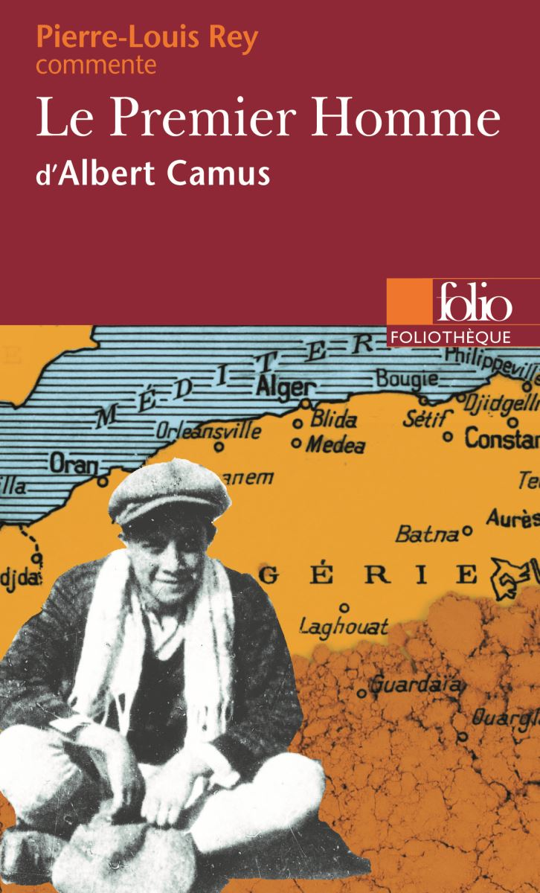

.
Albet Camus [1913-1960]
Vào một chiều thứ Hai tháng Giêng năm 1960, chiếc ôtô thể thao chở nhà văn Albet Camus [1913-1960] trượt bánh lao ra khỏi con đường nông thôn phía Nam Paris và đâm vào một thân cây. Cảnh sát đã vật lộn suốt 2 giờ để kéo thân thể nhà văn ra khỏi khối sắt bị dúm dó lại trên quảng đường từ Lens đến Paris. Đúng là một cái chết phi lý. Ngay hôm trước, Camus đã bỏ chuyến tàu hỏa đến Lourmarin, và người ta tìm thấy trong túi áo ông một chiếc vé tàu hỏa không dùng đến. Một cái chết phi lý đã phạt ngang cuộc đời đầy hào quang của một nhà văn trẻ đoạt giải Nobel vào lúc mới 47 tuổi, cái chết minh họa một cách bi thảm cho cái nhãn quan mà tác giả của cuốn Kẻ xa lạ đã nói đến một thế giới không thần thánh, không lẽ phải, không thể giải thích. Cạnh xác chiếc xe, một người đã tìm thấy chiếc cặp của ông lem luốc bùn, trong đó đựng những phần đầu của cuốn tiểu thuyết cuối cùng của ông.
Sau 34 năm kể từ đó, người con gái tác giả cuốn Kẻ xa lạ, một tác phẩm nổi tiếng vào bậc nhất của Pháp trong thế kỷ này, đã quyết định cho in ra bản thảo đó.
Đấy là một bản thảo chưa viết xong và chưa sửa chữa lại, tất cả chỉ có 144 trang. Nhưng đấy là một sự bộc lộ sâu kín về tuổi trẻ của Camus – một con người kín đáo thường tránh né việc nói về quá khứ của mình. Cuốn sách ngay lập tức đã trở thành một “best seller” trong cái tháng mà nó ra đời.
Cuốn sách của nhà văn đoạt giải Nobel văn học này được ông đặt tên là Người đầu tiên (Le Premier Homme) là một truyện kể quãng đời niên thiếu nhọc nhằn của Camus tại vùng ngoại ô nghèo nàn Belcourt của thành phố Algiers, thủ đô Algérie.

.Ông đã ca ngợi đất nước Bắc Phi này, nơi ông sinh ra, ca ngợi tình yêu của ông đối với người mẹ thất học bị tật nặng tai và tình yêu của ông đối với người thầy giáo đã đưa ông ra khỏi sự tối tăm ngu muội.
Người ta tự hỏi tại sao những thân nhân của ông mãi đến nay mới chịu xuất bản cuốn sách đó. Catherine Camus, người con gái của nhà văn và là một luật sư, đã trả lời: “Ông chưa hề cho phép chúng tôi công bố bản thảo đầu tiên này. Có lần ông bảo ông đang nghĩ đến chuyện hủy nó đi”. Catherine hiện đang coi sóc tài sản của ông sau khi bà mẹ qua đời vào năm 1979. Cô nói tiếp: “Mẹ tôi luôn cho rằng cuốn sách có thể khuấy lên những lời bình phẩm của những người đã nói rằng Camus hẳn không bao giờ viết ra cái gì khác đáng giá. Đấy là điều người ta nói sau khi ông nhận giải Nobel năm 1957”.
Một phần vì cái quá khứ nghèo khổ, Camus vẫn là kẻ ngoại đạo đối với giới trí thức Pháp mặc dầu ông thuộc về nhóm “Cánh tả của Paris” mà người chủ soái là nhà văn kiêm triết gia Jean Paul Sartre.
Sự gắn bó của ông với sự cai trị của Pháp ở Algérie đã làm cho ông xa lạ với những trí thức cánh tả ủng hộ độc lập dân tộc. Theo Catherine, “chỉ đến năm 1980 thì thời cuộc mới xoay sang chiều hướng có lợi cho ông. Khi tôi đọc bản thảo, tôi nghĩ đấy là một tư liệu độc đáo vì đấy là tự thuật, bởi vậy tôi quyết định phải xuất bản nó”.
Thế là Catherine bỏ ra mấy tháng trời để “giải mã” bản viết tay của bố mình-thường phải dùng kính lúp để soi hay qua những bức ảnh chụp phóng to ra Catherine hầu như không biên tập lại nguyên bản, ngoài việc thêm vào những dấu ngắt câu. Những chỗ sai, những chỗ bị xóa, hay trùng lặp vẫn để nguyên, còn tên người mẹ và ông chú thì thay bằng tên khác.
Nhân vật chính, Jacques Carmery, chính là bản thân Camus. Bằng chứng về bản chất tự thuật của tác phẩm có thể tìm thấy trong cái ghi chú mà Camus đã luôn luôn ghi ở bên lề: “Nhớ thay tên những người này”.
Ông có kế hoạch viết thiên truyện này dài gấp năm lần thế, và tập trung vào một gia đình nghèo bị kẹt trong cuộc chiến tranh giành độc lập của Algérie chống lại Pháp. Đối với Michel Cournot, nhà phê bình văn học của tờ báo Người Quan Sát Mới, cuốn sách đã mang một tác giả thường cách biệt với độc giả đến gần với họ rất nhiều. “Lần này, ông không còn xa vời. Đây giống như cuộc đời, với máu me ngập đến khuỷu tay và tất cả những cảm xúc về chiếc phòng ngủ, con đường, bãi biển và phòng học, với những mùi vị của chúng và tiếng la hét, và, tiếp ngay đấy, những vụ giết chóc”.
Sự vắng bóng người cha của nhà văn, người ngã xuống chiến trường trong thế chiến lần thứ nhất vào năm 1914, đã ám ảnh phần lớn thiên truyện. Gia đình vẫn giữ lại những mảnh đạn đã làm đầu ông vỡ toác ra, cất trong chiếc hộp thiếc đựng biscuit để trong ngăn tủ.
Ở chương hai, Camus kể lại cuộc đi thăm ngôi mộ của người bố một cách miễn cưỡng tại nước Pháp theo yêu cầu của bà mẹ. Lúc bấy giờ người con trai 40 tuổi đã tràn ngập thương cảm khi biết ra rằng con người chôn dưới chân ông đã chết lúc mới 29 tuổi – “Nơi mà người con lại già hơn bố mình thì chỉ có điên rồ và hỗn loạn thôi”, ông có lần đã nói thế.
Trong ngôi nhà của Camus không một ai biết đọc. Phần lớn người trong nhà chẳng mấy khi nói năng – cả mẹ ông và người chú đều nghễnh ngãng. Chính cái bối cảnh này giải thích cái ý thức nổi loạn về tự do và cái nhu cầu cấp bách mà ông cảm thấy cần phải “nói lên cho những người không nói năng được”, như lời phát biểu của ông khi nhận giải Nobel.
Thần chết đã tử tế với tác phẩm cuối cùng của Camus, cắt đứt mạch truyện đúng vào lúc ông đã viết xong phần đầu tác phẩm. Mặc dầu còn dở dang, phần viết về thời thơ ấu này vẫn có được sự hoàn chỉnh của riêng nó. Trên trang cuối để trống chỉ có dòng tít Thời vị thành niên.